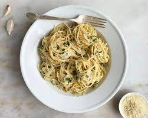

Pasta al aglio e olio

A plate of pasta.
Description
Pasta can often feel like a complicated and expensive dish to pull off, especially when you try to make an elaborate sauce and use special kinds of pasta.
However, this recipe shines because of its simplicity and practicality, returning to the base of good homemade pasta with spaghetti and olive oil.
As long as you have 20 minutes and the urge to eat something other than prepared food, you can whip this up in no time, and even have some leftovers.
Ingredients
- A pack of store bought spaghetti (1 kg).
- 4 cloves of garlic.
- Olive oil.
- Manchego cheese (or any other cheese of your preference).
Steps
- Fill a pot with water and heavily salt it.
- Put your water to a boil.
- Once your water is boiling, add the pasta and let it cook for the time indictaed in the package or until al dente (soft, but firm at the center).
- Strain the pasta and reserve the water.
- In a separate pot, add some olive oil and your thinly chopped garlic.
- Once your garlic has acquired a golden brown color, add your pasta and a little of your pasta water into the pan.
- Season to taste with salt and pepper.
- Serve unto a plate and grate some of your cheese while it's still hot.
- Enjoy!